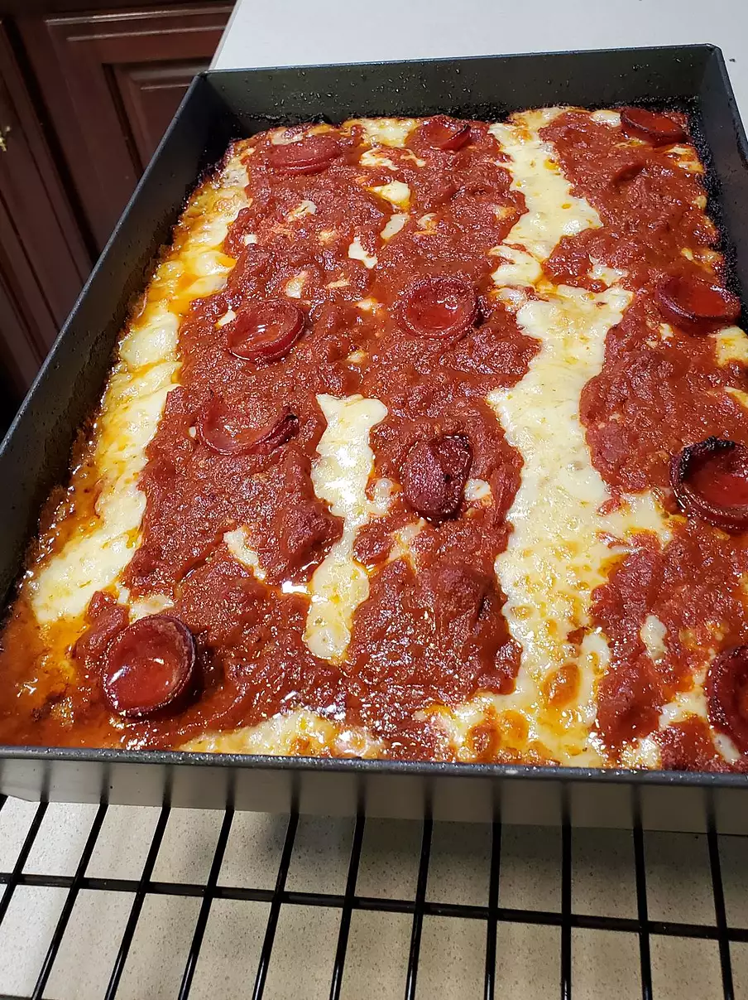

Odin Pizza Recipe

A delicous Detroit style pizza!
Forget the old Chicago vs. NY debate! America's best pizza could very well be Detroit-style pizza.
Even though it's often referred to as 'deep dish,' I don't think that accurately captures the essence
of this crispy, crusty, crazy-good slice. It has flavor elements of a slightly charred thin-crust pizza,
with the texture of light, airy focaccia. Plus, if you use the properly shaped pan, the edges of your
crust get wonderfully crunchy, making for a truly unique experience.
Ingredients
- dry yeast
- white sugar
- olive oil
- kosher salt
- bread flour
- marinara sauce
- red pepper flakes
- garlic powder
- monterey jack cheese
- mild cheddar cheese
- pepperoni slices
Steps
- Pour warm water into the bowl of stand mixer; mix in yeast and sugar and let dissolve. Add 2 teaspoons olive oil, salt, and bread flour. Knead mixture together with a dough hook attachment until dough is very smooth, soft, and elastic.
- Drizzle remaining olive oil over the bottom of a 10x14-inch Detroit-style pizza pan and spread around with your fingers. Place dough in the center; pull and stretch into a roughly rectangular shape with oiled fingers. Cover and let rise until doubled in volume, about 1 hour. Prepare sauce and cheese in the meantime.
- Combine marinara sauce, oregano, red pepper flakes, and garlic powder in a saucepan over medium-low heat. Simmer to fully hydrate the oregano and garlic, about 15 minutes.
- Preheat the oven to 500 to 550 degrees F (260 to 288 degrees C).
- Dice Monterey Jack and Cheddar cheese into small cubes. Toss lightly to mix together.
- Lay most of the pepperoni onto the dough. Scatter cheese cubes evenly on top, making sure to fully cover all the edges where dough meets the pan. Ladle sauce on top in 3 long strips. Arrange remaining pepperoni over the sauce.
- Bake in the preheated oven until pizza is somewhere between golden brown and golden black, about 15 minutes. Let cool for 5 minutes.
- Very carefully slide pizza onto a cutting board using a spatula. Cut into individual pieces using the lines of sauce as a guide.